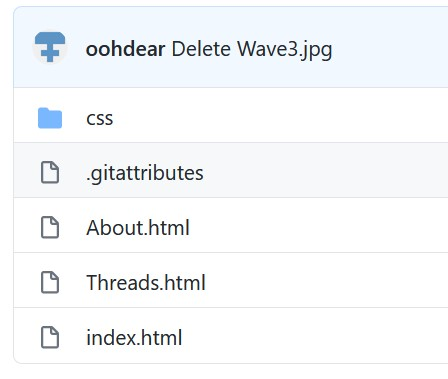

This is hopefully going to be a place where we can all share the cool shit that we are interested in even though we're not all geolacated together. It may seem tricky at first but give it a shot.
If you have nothing to add, don't worry. Keep it in mind if you're ever bored or stumble across some cool shit. You can add links or text. I've explained how you add stuff below.
Github.
Github is where the website is hosted and where you will go to add content. you can access it here or in the link in the top right of the page. The login details are in the chat. When you get access you should see a list of files like this:
Links.
1. Click on the file called index.html. In the top right there is an pencil icon which will allow you to edit, click this.
2. Scroll down to the comment and add your link and its name in the same format .
3. Once you have added it, scroll to the bottom of the page and click commit changes.
Threads.
1. Click on the file called Threads.html.
2. Scroll down until you find the first comment, marked by the *********asterisks, nd follow the instructions.
3. Then continue scrolling until you find the next set of *********asterisks and follow the instructions.
4. Once you have made both changes, continue to the bottom of the page and press commit changes
Sometime the website wont load your changes unless you clear you brower cache